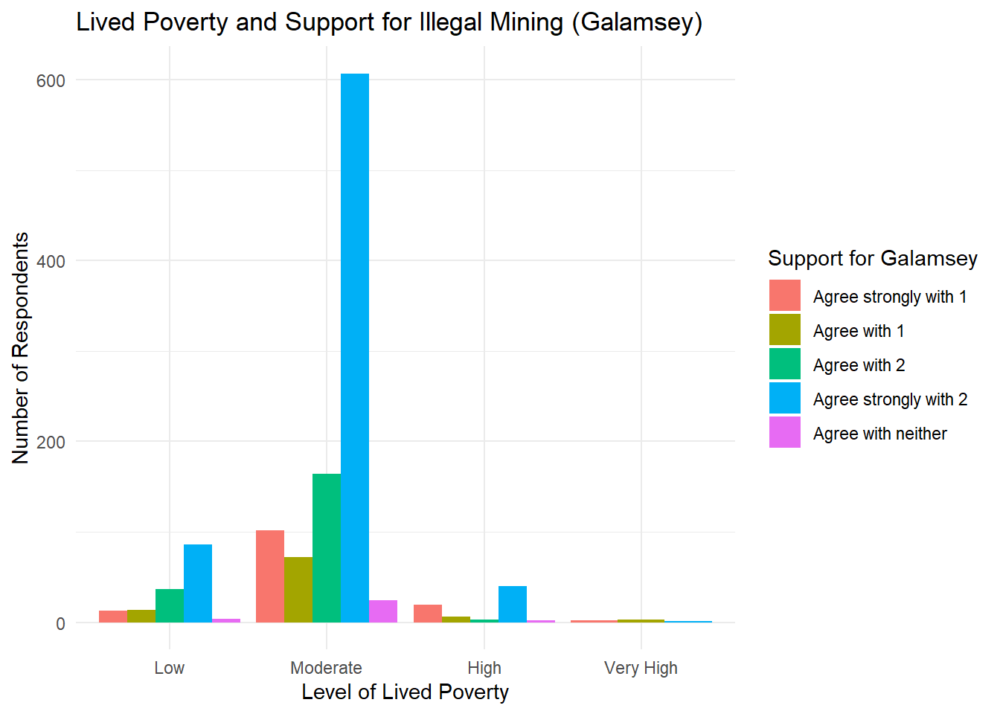
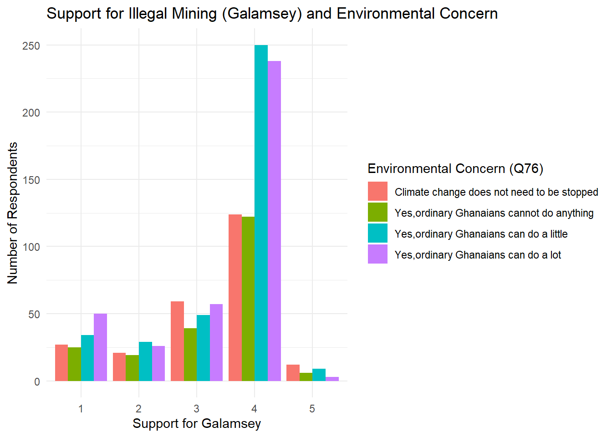

Variable Mean Min Max SD
1 Galamsey Support 3.36 1.0 5.00 1.06
2 Lived Poverty Index 1.35 0.5 3.83 0.42
3 Environmental Concern 1.73 0.0 3.00 1.11Economic Hardship, Environmental Concern,and Public Support for Galamsey in Ghana
Introduction
A well-documented finding in environmental sociology and economics is that concern for the environment tends to rise with income (Fairbrother 2012). Wealthier individuals, and wealthier nations, express greater willingness to prioritize ecological protection over economic growth. Yet this pattern may reflect the insulation that prosperity affords, rather than genuine environmental virtue. Wealthy nations, heavily populated within the Global North, have largely externalized the costs of their economic growth, through historical emissions, resource extractions, and industrial production, onto the populations least equipped to absorb them, mostly categorized by the Global South. Communities across sub-Saharan Africa, South and Southeast Asia, and Latin America face the sharpest consequences of global environmental degradation, despite having contributed a smaller fraction of cumulative greenhouse gas emissions. Thus, while the economies of the Global North create the atmospheric conditions driving climate change, “the Global South bears the brunt of its devastation” (Tougas and Arshad-Ayaz 2021). For these populations, environmental concern is not an abstract policy preference but a lived condition, and in contexts of acute hardship people may face a sharper trade-off between survival and environmental protection. This relationship then raises a more difficult question: when individuals face a direct and immediate trade-off between livelihood and environmental harm, does environmental concern contract in favor of a greater economic well-being? How individuals resolve that trade-off and the factors that shape their resolution remains under explored in the empirical literature on environmental attitudes in developing contexts.
Franzen and Meyer (2009), in their paper on Environmental Attitudes in Cross-National Perspective, claim that “individuals who live in a relatively high-income household, as measured by the deviation from a country’s mean income, report a higher concern for the environment than individuals in households with relatively lower income.” Franzen and Meyer also deduce from their findings that this individual effect confirms the “prosperity assumption” which states that one’s willingness to invest in the quality of an environment increases with income, and that a concern for the environment depends on individuals’ post materialistic attitudes, which include fighting for environmental protection. This post materialist thesis suggests that environmental concern is a luxury afforded by economic security. Where basic needs remain unmet, individuals and communities are more likely to prioritize immediate survival over long-term ecological considerations, out of rational necessity.
Researchers have also observed that environmental concern is not uniform, and varies significantly by country, income level, and degree of economic vulnerability. This comes from inquiry on how populations in developing contexts weigh environmental risk against immediate livelihood pressures. In the paper, The Impact of Macroeconomic Factors on Environmental Concern, Conroy and Emerson (2014), find that in general, when economic conditions are “unfavorable”, like higher unemployment, or lower GDP growth in an economy, respondents are more likely to believe that, at least in the case of the U.S, the government is “spending too much on ‘improving and protecting the environment’”. This follows their notion that environmental quality is a normal pro-cyclical good and that environmental spending (or the concern related to its spending) should rise when an economy is expanding and fall during economic contractions.
This paper examines how acute economic hardships shape environmental values among individuals whose livelihoods depend on environmentally destructive activity, using Ghana’s illegal small-scale mining sector- known locally as galamsey- as the empirical setting. Galamsey has contaminated over 60% of the country’s water sources with heavy metals, yet it persists because it provides livelihoods for hundreds of thousands of Ghanaians with few economic alternatives. A paper on the health hazards associated with the exposure to galamsey-related pollutants shows how galamsey, although a lucrative source of income for some underprivileged areas, comes with pollutants that “contaminate water bodies and ecosystems with high concentrations of mercury, acid, arsenic, lead and nickel” and “the release of toxic petroleum hydrocarbons(like methane and volatile organic carbons) due to spills and leaks,” which “poses significant risks to ecosystems and human health.” (Awewomom et al. 2024). These risks with environmental and health concerns may seem enough to deter the practice. However, existing research shows that illegal mining in Ghana is shaped by both economic necessity and environmental concern. A study that examined the gaps between mining laws and galamsey’s persistence highlighted that the act provides livelihoods for many while causing environmental damage. The study also notes that economic pressures like unemployment push participation.(Vovobu 2024)
While the economic dimensions of illegal mining are well-documented, the environmental attitudes of those involved remain comparatively under-explored. This has significant implications for understanding participation in illegal mining in developing contexts like Ghana, where high unemployment and limited economic alternatives constrain the range of priorities people can hold.
My research question then, to find out if there are any trade-offs between care for the environment and economic well-being, is:
To what extent do economic hardship and environmental concerns influence attitudes toward illegal mining in Ghana?
Understanding this matters because it may explain why the act persists despite its damaging effects. If support for illegal mining is driven by poverty rather than indifference to environmental harm, then criminalizing the act without addressing its economic roots may not change public behavior. This conjunction of environmental harm, acute economic need and direct livelihood dependence makes galamsey a sharp case for studying how the trade-off between survival and environmental protection may be resolved in practice.
Hypothesis
Individuals experiencing greater economic hardship will be more likely to express supportive or tolerant attitudes toward illegal mining in Ghana, even when they recognize its environmental harms.
This hypothesis rests on the theoretical logic that economic necessity restructures how individuals prioritize competing goods, and how they evaluate environmentally harmful activities. When basic material needs like food, shelter or income, are unmet , people are less likely to prioritize longer-term goods like environmental protection.
Maslow’s Hierarchy of Needs provides a useful framework here: physiological and safety needs occupy the base of the hierarchy and must be satisfied before individuals attend to higher-order concerns. Environmental protection sits outside of these foundational tiers. The key theoretical implication is that economic hardship shifts the trade-off calculation, tolerating environmental damage becomes a rational response when the alternative is a deprivation of basic needs.
In the Ghanaian context of illegal mining, this persists partly because it provides an important short term source of income for individuals for limited employment opportunities. The lack of alternative jobs pushes many people, especially those who have lost agricultural income, to turn to mining as a means of survival. When survival depends on daily revenue, the environmental costs of mining like contaminated waterways and mercury exposure, may be recognized but de-prioritized. This is the core mechanism linking economic hardship to tolerant attitudes toward illegal mining, that necessity weakens the weight individuals assign to environmental harm in their evaluative calculus.
Conversely, those with greater economic security , measured by having a stable, formal employment or diversified income sources, will have less favorable attitudes toward illegal mining in Ghana. Without the dependence on mining income, they bear the environmental costs of galamsey without receiving its economic benefits. For these individuals, opposition to illegal mining is both economically rational and environmentally motivated. The visibility of environmental damage, such as contaminated water or mercury-related deaths, may reinforce negative attitudes particularly among those not materially compensated by the activity.
Data And Research Design
This study draws on Afrobarometer Round 7 conducted in Ghana in 2017 by the research organization, Afrobarometer (2018) . The unit of analysis is the individual respondent and the sample contains approximately 2,400 Ghanaian citizens above the age of 18.
The specific variables I used to test my hypothesis were Galamsey Support, Q83a, as the dependent variable, measured by the survey question asking whether citizens should be able to engage in illegal small-scale mining(1) or should not engage in it for any reason (2). Responses are coded on a five-point scale ranging from 1 (agree strongly with 1) to 5(agree with neither), with 4 (agree strongly with 2) being disapproval of galamsey for any reason.
The primary independent variable is Lived Poverty Index(LPI), a composite measure constructed by averaging five survey items that ask respondents how often, over the past year, they went without: (1) food, (2) clean water, (3) medical care, (4) cooking fuel, and (5) a cash income. Each item is coded on a five-point scale from 0(never) to 4(always). These five items are then averaged to produce a continuous index ranging from 0 to 4, where higher scores reflect greater material deprivation.
Taking this average is appropriate because it treats each domain of hardship as equally weighted and captures a generalized experience of poverty rather than deprivation in any single area. Respondents with missing values on one or more of the five items were excluded form the index calculation to ensure that the average accurately reflects responses across all dimensions rather than being skewed by partial data.
The secondary independent variable is Environmental Concern, measured using Q76 in the Afrobarometer survey, which asks respondents whether climate change needs to be stopped and how much ordinary citizens can do to stop this climate change as a serious issue requiring public action and collective responsibility. Environmental Concern is defined here as an individual’s perceived deterioration of environmental conditions based on direct, lived experience and the need for change to be made. While no question in the Round 7 instrument directly asks about environmental concern or galamsey-specific environment degradation, this proxy is theoretically defensible in the Ghanaian context because support for climate action reflects a broader awareness of environmental threats and the importance of environmental protection. Given Galamsey’s well-documented destruction of water bodies, farmland, and forest cover respondents who believe ordinary citizens must act against climate change are more plausibly environmentally conscious overall. This relationship is especially relevant in Ghana, where illegal mining activity act as a “threat to agricultural lands” and lead to “deforestation leading to soil erosion, destruction of agricultural lands and pollution of water bodies.” (Gyimah 2019), posing danger to both environmental sustainability and rural livelihoods.
Environmental Concern in this case is coded from 0 (no, climate change does not need to be stopped) to 3 (yes, climate change needs to be stopped and ordinary citizens can do a lot). This means a value of 3 reflects greater perceived environmental deterioration and collective action to ameliorate climate change.
Descriptive Statistics
Figure 1 presents the descriptive statistics for the three key variable. Galamsey Support with a mean of of 3.36 on a 1-5 scale, suggesting on average, respondents lean modestly away from approval of illegal mining. The Lived Poverty Index has a mean of 1.35 on a 0-4 scale, reflecting that the average respondent experiences moderate poverty but not severe material deprivation. Environmental Concern has a mean of 1.73 and suggests that respondents recognize some need for climate change to be stopped and that ordinary citizens can do something about it.
To test whether economic hardship and environmental concern pull in opposite directions and whether poverty conditions the weight individuals place on environmental concern when evaluating galamsey, the main specification is an OLS regression model.
\[ \begin{aligned} \text{GalamseySupport}_i &= \beta_0 + \beta_1 \text{Poverty}_i + \beta_2 \text{EnvConcern}_i \\ &\quad + \beta_3 (\text{Poverty}_i \times \text{EnvConcern}_i) \\ &\quad + \beta_4 \text{WaterSatisfaction}_i + \beta_5 \text{Urban}_i + \beta_6 \text{Employment}_i \\ &\quad + \beta_7 \text{Education}_i + \beta_8 \text{Region}_i + \beta_9 \text{PartyID}_i + \epsilon_i \end{aligned} \]
Key Coefficients
β1 captures the baseline relationship between economic hardship and galamsey support, holding all other variables constant. The hypothesis would predict β1 >0, meaning higher poverty is associated with greater support for galamsey.
β2 looks at if environmental concern reduces support for galamsey, where β2 < 0. This would mean greater environmental concern should generally be associated with lower support for galamsey, as individuals who have higher environmental concern are less likely to tolerate the ecological damage it produces.
β3 is the interaction term between environmental concern and poverty index. This tests the conditional hypothesis directly, whether economic hardship weakens the negative relationship between environmental concern and galamsey support. The expectation is β3 > 0. Among respondents experiencing greater poverty, environmental concern may be less predictive of opposition to galamsey, because the trade-off between survival environmental protection that underlies the theoretical framework is only observable with this interaction. A positive β3 indicates that as poverty increases, the dampening effect of environmental concern on galamsey support weakens. This is also consistent with the Maslow-based logic developed in the hypothesis section.
Control Variables
β4- Water Satisfaction: Individuals who are dissatisfied with the government’s provision of water and sanitation services may be more likely to oppose galamsey if they attribute poor water access to illegal mining’s contamination of local waterways. Without controlling for this, the effect of environmental concern could be confounded by a direct, personal experience of environmental harm, outside of galamsey, like living in an area with prior industrial pollution or poor sanitation practices.
β5- Urban/Rural Context: Urban and rural respondents differ systematically in their proximity to mining activity, their dependence on natural resources and their exposure to galamsey’s harms and benefits. Rural individuals, particularly in mining regions, may be more economically reliant or directly affected by illegal mining. Omitting this could risk confounding geographic exposure with economic hardship.
β6- Employment Status: Employment captures a dimension of economic vulnerability from the poverty index. A respondent may score moderately on a poverty index but be acutely vulnerable due to unemployment. Including employment alongside poverty prevents the poverty coefficient from absorbing employment-driven variation.
β7- Education: This is associated with both environmental awareness and economic status, making it a potential confounder in both directions. The more educated an individual is, the stronger their environmental values, independent of income may be. They may also be more economically secure. Without controlling for education, it may be difficult to isolate whether observed attitude differences reflect economic hardship or differential environmental literacy.
β8- Region: Ghana’s regions vary in their exposure to illegal mining, proximity to affected ecosystems and historical relationship with mining. Respondents in the Ashanti or Western Regions, where illegal mining is most concentrated, may hold systematically different attitudes than those in the North. Region also correlates with poverty levels, as some regions may be poorer than others, making it an important control.
β9-PartyID: Party identification correlates with political affiliation in Ghana that may shape attitudes toward state enforcement of environmental regulations and economic development priorities. Since both major parties, NPP and NDC, have taken varying positions on galamsey crackdowns, party ID could confound the relationship between economic hardship and attitudes if it correlates with both.
ϵi is the error term, capturing at unobserved terms in galamsey attitudes not accounted for by the model. Relevant omitted variables may include social norms within mining communities, which may not be easily captured in standard survey instruments.
Threats and Confounders
A key threat in interpreting the coefficient in economic hardship as causal is omitted variable bias. Unobserved factors such as local employment opportunities and trust in the government may influence both individuals’ economic conditions and their attitudes toward illegal mining. These can be potential confounders that confuse the relationship. Reverse causality is also a concern, as individuals who support or participate in illegal mining may experience different economic outcomes as a result.
Findings

Figure 2 displays the distribution of Galamsey Support across levels of Lived Poverty. First, the majority of respondents fall within the moderate poverty category, with comparatively few reporting very high levels of deprivation. Across all poverty levels, responses are heavily concentrated on “Agree strongly with 2”, that is strong agreement that citizens should not engage in galamsey under any circumstances, suggesting that unconditional disapproval is the dominant view regardless of poverty experience. If the hypothesis holds, that higher lived poverty is associated with greater support for galamsey, then one would expect to see a relative increase in agreement with statement 1 as poverty levels rise. However, this plot offers limited support for this pattern: in the moderate poverty group, agreement with both statements 1 and 2 is visible, whereas in the high and very high poverty groups, the bars for statement 1 are negligibly small. This runs counter to the hypothesis, as those experiencing greater deprivation do not appear more likely to endorse galamsey participation.

Figure 3 reveals that across all levels of galamsey attitudes, the dominant response is strong agreement with statement 2 (value 4, that citizens should not engage in galamsey for any reason), with this category containing the largest number of respondents. This pattern holds across all four environmental concern groups, suggesting that unconditional disapproval of galamsey is widespread regardless of how concerned respondents are about the environment. If the hypothesis holds, one would expect respondents with higher environmental concern to cluster more heavily at values 3 and 4 on the x-axis. The graph offers modest support for this, with answers “Yes, climate change needs to be stopped and citizens can do a little to stop climate change” and “Yes, climate change needs to be stopped and citizens can do a lot to stop climate change” being the largest groups at value 4 on Support for Galamsey while the other two answers remain consistently smaller across all categories. However, this pattern is difficult to interpret as a clear relationship because virtually all environmental concern groups peak at value 4.
Regression Results
| (1) | |
|---|---|
| * p < 0.05, ** p < 0.01, *** p < 0.001 | |
| Standard errors in parentheses. | |
| Factor controls included for water satisfaction, urban/rural, employment, region,education and party ID. | |
| Data: Afrobarometer Round 7 Ghana Survey | |
| Intercept | 1.962** |
| (0.639) | |
| Lived Poverty Index | 0.092 |
| (0.190) | |
| Environmental Concern | 0.161 |
| (0.131) | |
| Poverty × Environmental Concern (Interaction) | -0.104 |
| (0.093) | |
| Num.Obs. | 663 |
| R2 | 0.139 |
| R2 Adj. | 0.095 |
Figure 4: Regression of Galamsey Support on Lived Poverty Index, Environmental Concern and Their Interaction
The regression model predicting support for illegal mining (galamsey) does not support the hypothesis that individuals experiencing greater economic hardship will be more likely to express supportive or tolerant attitudes toward illegal mining in Ghana, even when they recognize its environmental harms. The Lived Poverty Index carries a coefficient of 0.092 (SE=0.190), indicating that a one-unit increase in experienced poverty is associated with only a 0.092-point increase in galamsey support, which is a substantive negative effect that is consistent with the economic survival hypothesis, which would predict poorer individuals to be more supportive of illegal mining as a livelihood strategy. This is, however, far too small to be considered meaningful. Environmental Concern similarly carries a positive coefficient of 0.161(SE=0.0131), that runs counter to theoretical expectations. This shows greater environmental concern is associated with marginally more support for galamsey, rather than less, but this is also too small to be considered meaningful on its own. The interaction term between poverty and environmental concern is negative, implying that among poorer respondents, environmental concern slightly dampens galamsey support , though the effect of -0.104 is negligible in magnitude.
Overall, the findings do not provide statistical evidence for the economic survival argument. Although the direction of the poverty coefficient is consistent with the hypothesis, its size is weak and the lack of significance means the result could be due to chance. With 663 observations, the model has a reasonably large sample size but the explanatory power has some variation as R2 = 0.139 and adjusted R2 is 0.095. This suggests that the model explains only a limited share of the variation in support for galamsey, and that other factors not included may be likely important in shaping attitudes.
Empirical Extension
Although my original hypothesis expected economic hardship to increase support for illegal mining as a means of survival, the empirical findings reveal a null result, meaning poverty does not significantly predict galamsey support in either direction (0.092, SE= 0.190, p>0.05). However, the null raises a more nuanced possibility that the effect of poverty on galamsey attitudes may not operate uniformly across population, but instead varies depending on individual’s degree of direct exposure to galamsey’s environmental harms. If environmental vulnerability is the mechanism linking hardship to galamsey opposition, then poverty should predict less galamsey support most strongly among those most directly exposed to illegal mining’s consequences, namely rural residents, while having little to no effect among urban respondents.
To test this, I will test an interaction between Lived Poverty Index and Urban/Rural Status, asking whether the relationship between poverty and galamsey support differs systematically across geographic contexts. A negative interaction would mean that poverty reduces galamsey support, specifically among those most exposed to its environmental consequences.
The OLS regression model is thus:
\[ \begin{aligned} \text{GalamseySupport}_i &= \beta_0 + \beta_1 \text{Poverty}_i + \beta_2 \text{Urban}_i \\ &\quad + \beta_3 (\text{Poverty}_i \times \text{Urban}_i) \\ &\quad + \beta_4 \text{WaterSatisfaction}_i + \beta_5 \text{EnvConcern}_i + \beta_6 \text{Employment}_i \\ &\quad + \beta_7 \text{Education}_i + \beta_8 \text{Region}_i + \beta_9 \text{PartyID}_i + \epsilon_i \end{aligned} \]
| (1) | |
|---|---|
| * p < 0.05, ** p < 0.01, *** p < 0.001 | |
| Standard errors in parentheses. | |
| Factor controls included for water satisfaction, employment,region,education and party ID. | |
| Data: Afrobarometer Round 7 Ghana Survey | |
| Intercept | 2.007*** |
| (0.607) | |
| Lived Poverty Index | -0.101 |
| (0.146) | |
| Rural | -0.113 |
| (0.279) | |
| Environmental Concern | 0.025 |
| (0.039) | |
| Poverty × Rural (Interaction) | 0.054 |
| (0.197) | |
| Num.Obs. | 663 |
| R2 | 0.121 |
| R2 Adj. | 0.090 |
Figure 5: Regression of Galamsey Support on Lived Poverty Index, Urban/Rural and Their Interaction
Lived Poverty Index is not significant from the model’s results. This represents the effect of poverty on galamsey support among urban respondents specifically. The negative direction suggests that urban poor are marginally less supportive of galamsey, but the effect is tiny and statistically indistinguishable from zero. Urban poverty does not, therefore, predict galamsey attitudes. With Rural being -0.113 as well shows that rural respondents are less supportive than urban respondents on average, but the effect is small as well. Thus, where one lives alone does not predict galamsey support. The poverty and rural interaction is insignificant as well. This means that poverty does not predict galamsey support differently in rural versus urban areas.
Overall, like the main model showing that poverty has no average effect on galamsey support, the placebo model shows this null result is not masked by opposing effects across rural and urban population. Even among rural respondents who are most directly exposed to galamsey’s environmental harms through polluted water sources, poverty does not translate into stronger opposition to illegal mining.
Discussion and Policy Implications
This study set out to examine whether economic hardship increases support for illegal small-scale mining (galamsey) in Ghana, hypothesizing that individuals experiencing greater poverty would be more tolerant of galamsey as an informal livelihood strategy. The empirical evidence does not support this hypothesis. Across the main regression model and the empirical extension, the Lived Poverty Index consistently fails to reach statistical significance, with magnitudes too small to be considered meaningful. Crucially, this null finding holds even when accounting for geographic exposure to environmental harm, revealing that poverty does not predict galamsey opposition more strongly among rural respondents who may be more directly vulnerable to illegal mining’s consequences. The results are therefore not strong evidence for or against the hypothesis but are consistently null across these model specifications, which constitutes as informative evidence that individual-level economic hardship is not a primary driver of galamsey attitudes in Ghana.
Anti-galamsey campaigns and policy interventions that target economically vulnerable individuals on the assumption that poverty drives tolerance for illegal mining may be misallocating resources. Future research could provide stronger evidence by using larger nationally representative samples with sufficient statistical power and employing other methods through which galamsey support is formed. Using community level data over individual data, such as community economic dependence on mining should be incorporated as well, given galamsey is fundamentally a community phenomenon. Lastly, using a better proxy for environmental concern in the regression analysis that better expresses concern rather than awareness would strengthen the analysis. These would works toward building a fuller understanding of what drives galamsey support and its trade-offs, and how public attitudes can be shifted in ways that support sustainable and legal approaches to natural resource governance in Ghana.
References
Afrobarometer. 2018. “Afrobarometer Round 7 Ghana Survey Data.” https://www.afrobarometer.org/online-data-analysis/.
Awewomom, Jonathan, Benyade K. Benjamin, Fobi E. Osei, David Azanu, Francis Opoku, Lyndon N. Sackey, and Osei Akoto. 2024. “A Review of Heath Hazards Associated with Exposure to Galamsey-Related Pollutants.” https://journals.ug.edu.gh/index.php/hsij/article/view/2534/1577.
Conroy, Stephen E., and Tisha L. N. Emerson. 2014. “A Tale of Trade-Offs: The Impact of Macroeconomic Factors on Environmental Concern.” https://www.sciencedirect.com/science/article/pii/S0301479714002898?via%3Dihub.
Fairbrother, Malcolm. 2012. “Rich People, Poor People, and Environmental Concern: Evidence Across Nations and Time.” https://doi.org/10.1093/esr/jcs068.
Franzen, Axel, and Reto Meyer. 2009. “Environmental Attitudes in Cross-National Perspective: A Multilevel Analysis of the ISSP 1993 and 2000.” https://academic.oup.com/esr/article/26/2/219/474760?guestAccessKey=.
Gyimah, Nathaniel. 2019. “Impact of Galamsey Operations on Agricultural Land and Livelihood of Farmers: A Case Study of Affiena Community in Wassa Amenfi West District of Western Region, Ghana.” https://papers.ssrn.com/sol3/Papers.cfm?abstract_id=3421765.
Tougas, Renee K, and Adeela Arshad-Ayaz. 2021. “Global Warming and the Disproportionate Impacts of Climate Change on the Global South.” PhD thesis, MA thesis in Educational Studies]. Concordia University.
Vovobu, Augustine. 2024. “Investigating the Gaps Between Ghana’s Minerals and Mining Act and the Persistence of Illegal Small-Scale Mining (Galamsey).” https://www.grin.com/document/1585209#:~:text=Investigating%20the%20gaps%20between%20Ghana's%20Minerals%20and,issue%20with%20complex%20economic%20and%20environmental%20implications.